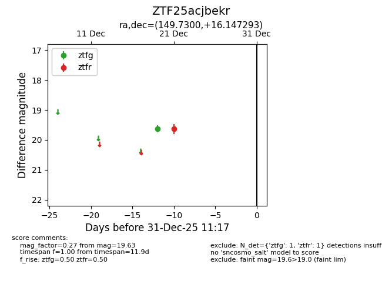
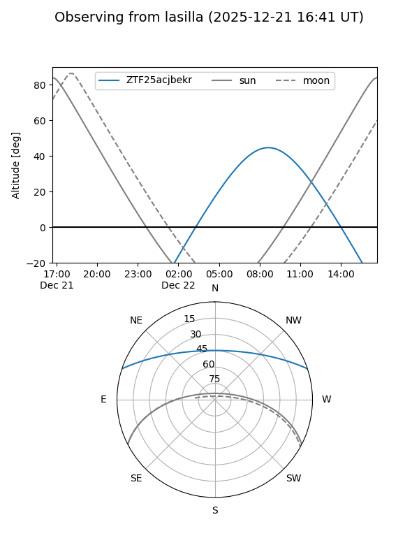

ZTF25acjbekr
Target ZTF25acjbekr at 2025-12-21 13:32
Aliases and brokers:
FINK: fink-portal.org/ZTF25acjbekr
Lasair: lasair-ztf.lsst.ac.uk/objects/ZTF25acjbekr
ALeRCE: alerce.online/object/ZTF25acjbekr
alt names
ZTF25acjbekr (ztf,fink_ztf)
Coordinates:
equatorial (ra, dec) = 149.7300,+16.14729
equatorial (HMS+DMS) = 09:58:55.20,+16:08:50.25
galactic (l, b) = (219.2011,+48.65204)
Flags:
Photometry:
last ztfg=19.62, ztfr=19.63
1 ztfg, 1 ztfr detections
Lightcurve

Visibility


Additional plots